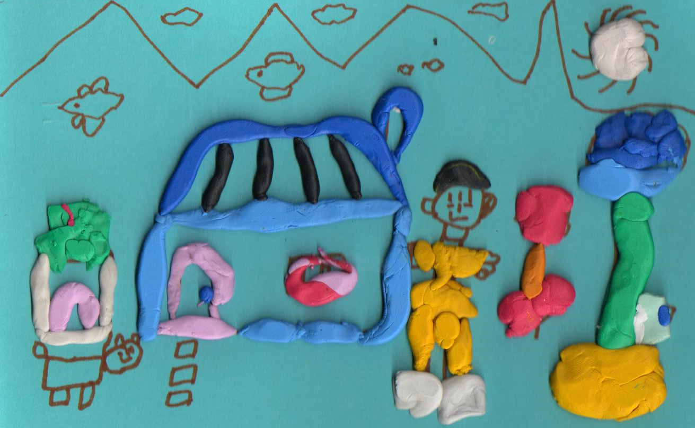

대상관계의 발달 과정
말러(Margaret Mahler)와 그녀의 동료들이 제시한 초기 심리발달의 이론은 '분리-개별화' 과정을 중심으로 한 대상관계 이론에서 중요한 위치를 차지한다. 유아가 어머니와의 관계 속에서 개인적인 자아를 어떻게 발전시키는지를 설명하며, 유아의 생애 초기 몇 년 동안의 발달 단계를 자폐적, 공생적, 분리-개별화 단계로 구분하였다. 이 과정에서 만족을 주는 엄마와 좌절을 주는 나쁜 엄마로 분리된 엄마상을 형성하면서 한결같이 사랑을 주는 사람(대상항상성， object constancy)이라는 이미지로 통합되면서 개별화 과정을 완성한다.
1) 자폐적 단계 (Autistic phase)
이 단계는 생후 초기 몇 주간을 말하며, 유아는 대부분의 시간을 자기중심적인 상태에서 보낸다. 유아는 주변 환경과의 상호작용보다는 자신의 내부적 필요와 감각에 더 집중한다. 이 시기의 유아는 마치 외부 세계와 분리된 것처럼 보이며, 외부 자극에 대해 제한적으로 반응하지 못하고 신체감각만 인식하는 자폐적 상태로 지낸다. 이 단계에서 신생아는 쾌락원리에 의해 움직이게 되는데 환경과 자신의 내부로부터 발생하는 생리적 긴장을 늦추어 생리적 평형을 유지하고자 한다.
2) 공생적 단계 (Symbiotic phase)
이 단계는 생후 약 1개월부터 시작되어 5개월까지 이어지며, 유아는 어머니(또는 주요 돌보는 사람)와 깊은 공생적 관계를 형성한다. 유아는 어머니와 자신을 하나의 단위로 인식하며, 어머니의 존재는 유아에게 안정감과 보호를 제공한다. 유아는 이 시기에 어머니와의 강한 심리적 결속을 경험한다. 하지만 자신과 자신의 욕구를 충족시켜 주는 주요 양육자(엄마)를 분리된 존재로 지각하는 것이 아니라 엄마에 대한 애착을 통해 자신과 엄마가 하나인 것처럼 지각한다. 자신과 엄마가 하나의 전능한 체계(an omnipotent system)인 것처럼 지각한다. 엄마와 공생적 관계， 즉 하나라는 느낌을 바탕으로 유아는 기본적인 만족감을 얻는 대상관계를 형성하고 자기신뢰 및 자기존중감을 형성할 수 있다.
3) 분리-개별화 단계 (Separation-individuation phase)
이 단계는 생후 약 5개월부터 시작되어 약 3세까지 이어진다. 이 시기는 여러 하위 단계로 나뉘며, 유아는 자신과 어머니가 별개의 개체라는 것을 점차 인식하게 된다. 유아는 낯선 사람에 대한 불안(stranger anxiety)과 분리 불안(separation anxiety)을 경험한다. 또한 기본적인 자아정체감과 엄마에 대한 대상항상성을 형성한다. 이 단계는 네 개의 하위 단계로 다음과 같이 구분한다.

하위 단계:
- 차별화(Differentiation): 유아는 자신이 어머니와 다른 독립적인 존재임을 깨닫기 시작한다. 이 시기에 유아는 물리적으로 어머니로부터 멀어질 수 있는 능력을 발달시킨다. 유아는 자신의 신체를 자각하고 자신과 엄마， 타인들을 구분하기 시작한다. 즉， 유아는 생후 6 개월쯤에서 분리-개별화를 위한 다양한 실험을 시작한다. 유아는 엄마의 얼굴을 눈으로 보고 손으로 만지며 촉감으로 느끼면서 탐구하는 행동을 많이 한다.
- 연습(Practicing): 유아는 걷기 시작하며, 물리적으로 어머니로부터 독립적인 활동을 탐색한다. 이때는 유아의 인지 지능과 서서 걷기와 같은 자율적인 기능이 급격히 성장한다. 이 시기에는 유아의 자기애가 절정에 이른다. 때로는 엄마의 존재를 거의 잊을 정도로 운동 기술을 연습하는 데 몰두하며 자신의 능력에 의기양양해한다. 이 동안에 유아는 자신의 자율성을 시험해보며 큰 기쁨을 느낀다. 유아는 숙달의 즐거움과 자신을 둘러싼 세계와 사랑에 빠진다. 유아는 점점 자신의 능력과 자신의 세계의 위대함에 도취되어 자기애기 발달한다. 이 시기 동안 유아는 엄마를 정서적 재충전을 위 해 되돌아와야 할 일종의 안식처처럼 생각한다.
- 재근접(Rapprochement): 이 단계에는 엄마와 유아의 관계가 질적으로 크게 변화한다. 연습 단계에서는 엄마는 유아에게 정서적 재충전을 위한 안식처였지만 이 단계에서는 더 나아가 자신이 세상에서 발견한 것을 나누고 싶은 존재가 된다. 하지만 유아는 엄마가 자신과 분리된 존재라는 것을 인식하기 때문에 엄마와 자신의 바람이 항상 일치하지 않는다는 것을 알게 되고 연습기에 느낀 위대함과 전능감에 도전을 받게 된다. 이 시기에 유아는 자신의 독립적인 활동으로 인해 생긴 불안을 경험하고, 다시 어머니와의 안정적인 관계를 추구한다. 다른 한편으로는 엄마에게 의존해서 자신의 소망을 마술적으로 실현해 주기를 바라는 두 가지 욕구 사이에서 갈등을 느낀다. 유아는 엄마에 대한 실망, 자신의 능력의 한계에 대한 무력감. 슬픔과 분노를 느낀다. 이러한 지각 때문에 엄마가 없을 때 과도하게 활동을 하거나 안절부절못하는 행동을 보이고 낯선 사람에 대해 불안해하는 반응을 다시 나타낸다.
- 객체(대상) 항상성(Object constancy): 유아는 어머니가 자신과 물리적으로 떨어져 있어도 변함없이 존재한다는 것을 인식하게 된다. 이 단계에서는 엄마를 밀쳐내는 행동과 엄마에게 매달리는 행동이 빠르게 교차하는 것이 특징이다. 21개월이 되면 일반적으로 재접근 위기는 안정화되는 경향을 보이며 유아는 자신이 가장 잘 기능할 수 있는 엄마와의 최적의 심리적 거리를 재발견한다. 개별화능력도 증가하는데 언어 발달을 통해 환경을 통제할 수 있다는 자신감， 규율과 요구의 내재화， 상징적인 놀이를 통해 소망과 환상을 표현하는 능력이 발달하며 성정체감이 생기기 시작한다. 이는 유아가 내부적으로 어머니의 일관된 이미지를 유지할 수 있게 되는 중요한 발달이 달성된다.
항상성은 긍정적인 엄마상이 점차 내재화되면서 확립된다. 대상에 대한 항상성을 획득한 유아는 엄마가 보이지 않아도 어느 정도의 긴장과 불편을 참으면서 엄마로부터 분리되어 기능할 수 있다. 놀이는 보다 목적성을 가지게 되고 건설적으로 이루어지며 환상놀이， 역할놀이， 가상놀이가 증가된다. 이는 엄마에 대한 좋은 대상과 나쁜 대상표상을 하나의 전체적 표상으로 통합시켰음을 나타낸다. 이 단계에는 언어가 급속히 발달하여 의사소통 능력이 증가한다.
이와 같이 말러의 이론은 유아가 어머니와의 복잡하고 역동적인 관계를 통해 자아를 발전시키고, 독립적인 개체로서의 자신의 정체성을 형성해 나가는 과정을 세밀하게 설명하였다. 이러한 발달 과정은 유아의 정서적, 인지적 발달에 중요한 기초를 마련하게 된다.
2024.04.30 - [이론] - 대상 관계 이론 - 애착과 의존, 억압 및 거부하려는 욕구
대상 관계 이론 - 애착과 의존, 억압 및 거부하려는 욕구
1. 대상관계 이론의 의의 대상관계이론은 인간의 심리구조 형성에서 초기 발달 단계의 영향을 강조하였다. 인간은 태어날 때부터 대상들과 관계를 형성하고 대상과 적극적으로 관계를 맺을 수
think-sis.co.kr
2024.05.23 - [이론] - 대상 관계 개념 - 자아 개념, 나와 너의 상호작용의 발달
대상 관계 개념 - 자아 개념, 나와 너의 상호작용의 발달
1. 대상관계의 개념 1) 대상관계대상관계(object relation)란 영아이 때 자신을 돌봐주는 양육자에 대한 이미지에서 비롯되는 것으로 발달하면서 개인적인 경험이 축적 됨에 따라 변하게 된다. 대상
think-sis.co.kr